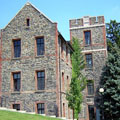

Now Playing:
Index #001 - Perreault, Adrian, 11 June 2001
|  |
Greystone
Built in 1865 |
Fern Tor is the 13 acre estate acquired by Marist College in 1997. Located on campus’s northern boundary, Fern Tor is a quiet retreat with trees, wildflowers, herbs, shrubs, wildlife, and several ecological habitats. The Hudson River can be viewed from several spots, as it is graced with 800 feet of shoreline. The land Fern Tor is located on remained undeveloped until it was purchased in 1861 by Thomas Newbold for a family home. Newbold constructed a mansion, summerhouse, formal gardens, greenhouses, a man-made pond, and a carriage house. Thomas Newbold’s son Frederick nicknames the location Fern Tor after its ferns and rocky hills. The property was later sold to the Way family who then sold the parcel to Marist. The foundations of the mansion are all that remain from the previous owners. Fern Tor is currently used by both environmental majors and non-science majors as an ecological lab or to just enjoy the peace and quiet.

{kind=link}
{kind=link}
{kind=link}
{kind=link}
{kind=link}
{kind=link}